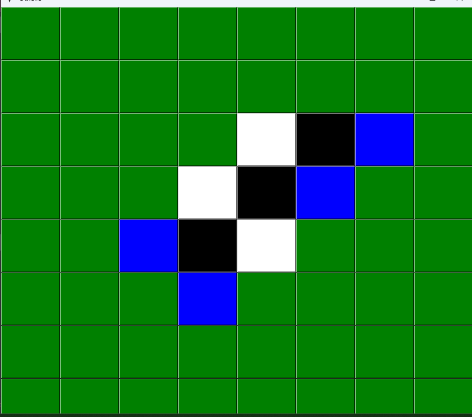
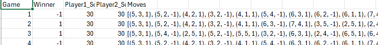
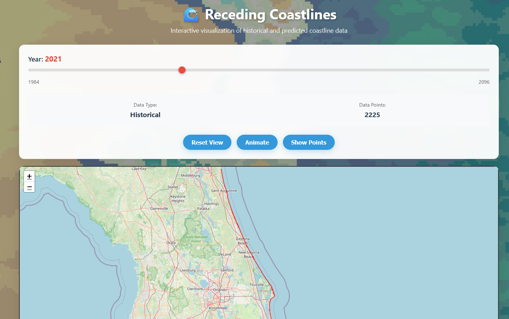
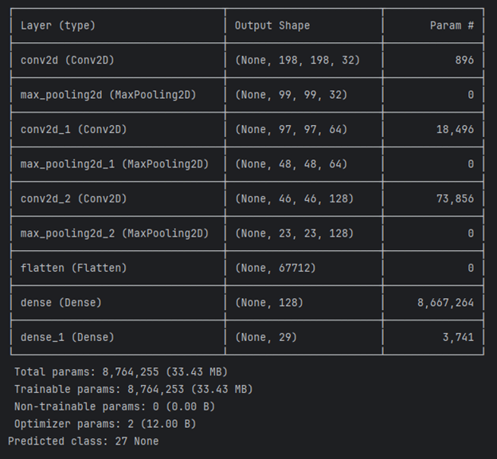

Projects
Othello Reinforcement Learning Model
Trained a deep learning agent using TensorFlow, CUDA, and cuDNN for self-play optimization on GPUs.
 Receding Coastlines
As part of Shellhacks 2025 3 Teammates and I created a coastline reccession prediction website. my contribution was development, tuning, and training of a transformer model we used for prediction. I also created the portion of the backend that takes the output of the model and converts it to a suitable format. Website
ASL Character Classification App
Built a CNN for ASL character recognition (~95% accuracy) and integrated it into a Flutter app using TensorFlow Lite.
Inverse Kinematics Robot Arm
Simulated a robot arm using Jacobian-based IK with obstacle avoidance and joint constraints in Python.

Lecture: CNNs for MNIST
Hosted a lecture + lab on CNNs and the MNIST dataset. View Slides